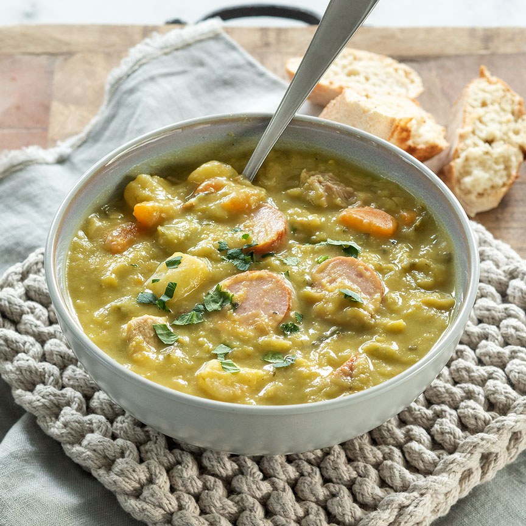

Erwtensoep
Split Pea Soup

This old family recipe makes a thick, hearty pea soup, and that's how it should be. In fact, the Dutch believe that erwtensoep (also known as snert) should be so thick that you can stand a spoon upright in it.
Made with split peas, plenty of vegetables, and pork, this delicious Dutch pea soup is traditionally served on New Year's Day in the Netherlands but is also enjoyed throughout the fall and winter months.
If you prefer a slightly thinner soup, simply add more stock. It's customary to serve this hearty winter soup with slices of rookworst (smoked sausage) and rye bread topped with katenspek (a type of Dutch bacon that is first cooked, then smoked).
Ingredients
- 7 1/2 cups (1 3/4 liters) water
- 1 1/2 cups (300 grams) dried green split peas
- 3 1/2 ounces (100 grams) pork belly, Dutch speklapjes or thick-cut bacon
- 1 pork chop
- 1 bouillon cube, vegetable, pork, or chicken
- 2 stalks celery
- 2 to 3 carrots, peeled and sliced
- 1 large potato, peeled and cubed
- 1 small onion, chopped
- 1 small leek, sliced
- 1 cup cubed celeriac
- 1 pound sausage, chopped rookworst smoked sausage, or smoked soft metwurst or frankfurter/wiener sausages
- Salt, to taste
- Freshly ground black pepper, to taste
- 1 handful celery leaves, chopped, for garnish
Steps
- In a large soup pot, bring water, split peas, pork belly or bacon, pork chop, and bouillon cube to a boil. Reduce the heat to a simmer, cover, and let cook for 45 minutes, stirring occasionally, and skimming off any foam that rises to the top.
- Remove the pork chop, debone, and thinly slice the meat. Set aside.
- Add the celery, carrots, potato, onion, leek, and celeriac to the soup. Return to the boil, reduce the heat to a simmer and let cook, uncovered, for another 30 minutes, adding a little extra water if the ingredients start to stick to the bottom of the pot.
- Add the smoked sausage for the last 15 minutes of cooking time. When the vegetables are tender, remove the bacon and smoked sausage, slice thinly, and set aside.
- If you prefer a smooth consistency, purée the soup with a stick blender. Season to taste with salt and pepper. Add the meat back to the soup, setting some slices of rookworst aside.
- Serve in heated bowls or soup plates, garnished with slices of rookworst and chopped celery leaf.
Back home